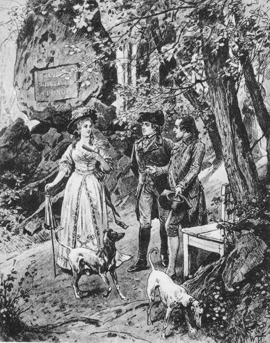

What has happened to feminism?
The latest from feminist hell is the so-called 4B movement
Käthe Kollwitz nerves of steel to live through Nazi times without fleeing.
Made in Minnesota
Recently, two things did “a perfect storm” in my head helping me crystallize my thoughts on just what I really think about Minnesota1 … so do I actually publish this Monster Troll? If you’re reading it, I guess I did…
- Brothers Bart (poet/writer) and Russ (musician) Sutter performed at my Grand Marais library this past Friday.
- I came across the book Jack & the Ghost by Chan Poling and Lucy Mitchell (2019; University of Minnesota Press) at a local thrift store.
A nervous coexistence
Since arriving in Duluth in 2003 with my Kansas Mennonite (non-conservative) wife and our twin boys, finally settling in Grand Marais in 2007, I’ve had, to put it mildly, growing issues with the Northern Midwestern Minnesotan social and cultural scene, especially here on the North Shore of Lake Superior. Insular, provincial, parochial, incestuous, puerile emotionally immature, anti-intellectual, stiltedly intentionally dumbed-down unsophisticated, a hodgepodge of recursive hyperreality tropes—are just some of phrases and terms I mutter under my breath on a daily basis in the direction of those I refer to as the Flannel Shirt People, the Carhartt Steger-Mukluk Wintergreen-Anorack Filson Vest Nazis, the Red Green Show extras who drive Jeep Cherokees and Subaru Outbacks and insist this Arrowhead Region must be a continuation of their Kumbaya around the campfire childhoods.
Grand Marais: North Shore ground zero. Besides the minority local-yokel born-and-raised-heres, we have two big Venn diagram circles: the well-off, DFL-voting retirees, and the middle- to upper-class suburbanites come here to make this wilderness corner their Jack Fucking London! Ernest Fucking Hemingway! Robert Fucking Service! Lost Alaskan County Fantasy Park.
Okay, slow down. I fully understand that all of these Jimmy Billy Jack London Thudpucker she ran calling Wildfire, Wildfire types are simply searching for authenticity, truth, purity, and innocence, and it’s all good on some level. But really, how did I, who basically wants the same things, get so left out? Why don’t I fit in? Why am I so out of synch? Why am I the lone boy who sees the emperor naked? I blame Europe and my almost ten years there, specifically Germany and Switzerland. For it was there that I was exposed (indoctrinated in-) to the Old World way of thinking and being.
As I’ve explained elsewhere, Europe, the Eastern Hemisphere in general, is working with four dimensions, while Americans only work with three. The fourth dimension is of course time, but in a social-cultural sense time as history. Which is necessary in order to have real culture. Americans, lacking history and real rootedness are like children fighting to dominate the ever-changing Zeitgeist, an endless, senseless version of King of the Hill. That is to say, we’re just kaleidoscoping churn. As a German once said to me, You Americans are trying to put together a jigsaw puzzle missing half the pieces and no box lid to know what it’s supposed to look like. Right. So we just cut and glue and tape some abstraction together, then fight over whose is the right picture. Yeah, ouch! I cried when I heard this…
Alas, but I’m the American who went to Europe and now can’t resettle back in my land of origin, hard as he has tried.2 Yes, I should have stayed! But A) they don’t just hand out citizenship to anyone, assimilated as I was or no, and B) a busted engagement put me in an irrational state of mind which had me scurrying brokenhearted back home. Alas… Especially Germany was my Hogwarts where they sorted me into the Ravenclaw House, i.e., the intellectuals. And ever since it has been my noblesse oblige to keep learning, keep exploring and growing intellectually—which puts me at odds with the Kumbaya singers, the rugged outdoors types who must dominate this space.
Bullerby Syndrome? Nej tack…
What is known as the Bullerby Syndrome is the idealization of that particular other-century
The Sutter Brothers
The audience at the Grand Marais Public Library on November 8 numbered some fifty-plus, nearly all Boomers like me, the DNA visibly skewed Scandihoovian. And as the show got underway I realized this was the same audience that would flock to A Prairie Home Companion, a North House Folk School presentation, and most sorts of “workshops” on New Age esoterica.
Once again, the predominant psych marker was some variant of Freudian emotional immaturity. Here were the people for whom the childhood trips up the Shore have never really ended. Here was just another reliving of the campfire in the deep woods singing about Michael rowing his boat ashore. But how dare I rain on their parade?
Ross began with a campfire song, his next a Bill Staines song. Cringe. Bill Staines would be the antidote to the dark sarcasm and nihilistic cynicism of John Denver. People who didn’t understand that the film A Mighty Wind 3 A Mighty Wind was made by the same people who made This is Spinal Tap and intended as a “mockumentary.” was mocking them and their overwrought, saccharine “sucky folk” were there legion.
Really though, what reaches us emotionally? What is sentimentality? And why is one man’s sentimentality another’s mawkish kitsch? Expressing gentleness, matters of the heart is fraught. The main problem is vulnerability and triggering defensiveness. I’ve heard that Garrison Keillor can be short if not irascible if, say, a East Coast city-slicker were to cast aspersions on his Northern Midwest shtick. It’s all good but it’s not.
I compare this with my parents who were born in 1935,4 A strange generation, sometimes called the Silent Generation, that came between The Greatest Generation (people born between 1901 to 1927) and the baby boomers (1945 - 1960). They were a sort of second “Lost Generation,” the first I would say exhibited “old soul” traits. Think Audrey Hepburn and George Peppard’s characters in Breakfast at Tiffany’s, the generation’s theme songs Moon River, The Shadow of Your Smile, and then of course The Girl From Ipanema as sung by one of their leading old soul mascots Astrud Gilberto. college-educated (Washington University, St. Louis), vaguely intellectual. They lived in tumultuous times, but their collective inner space was soft and gentle and compassionate—and yet ultimately with a fatalist streak. They came and went, almost unnoticed generationally-speaking. Oh but we Boomers! Loud, brash, trouble-making, facile, feckless “new souls,” we talked big, delivered little. Our “rock stars” tore up hotels and smashed guitars on stage.5 Can you imagine Tracy Chapman smashing her acoustic guitar? But now we’re middle-aged and older and finally beginning to sort out adulthood.
As I understand, many modern-day Old World Scandinavian social scientists have come here to study our isolated, time-capsuled New World immigrant Scandinavians. The most obvious trait they find is the general religious hangover, i.e., that here is a Lutheranism long since faded away from the Scandinavian homelands. Meaning here are yet strong echoes of that yesteryear Scandi-Lutheran Calvinist-Pietist which is led by strict morality and fatalistic emotional minimalism.6 See this for a parallel “severist” English Dissenters’ take on Protestantism.
Certainly Trump will rip many layers of fantasy off our collective carcass—to replace them with his layers of fantasy. But we may just bleed out, or reject the new transplant layers and die of sepsis. Big alas.
What do Bart Sutter, Sigurd Olson, and Sam Cook—and now Chan Poling—all have in common? I begin by saying they all share an impressionistic but strangely noncommittal vagueness. It’s when you try to have one foot in some hazy Northern European peasant past and the other in our always played-down American college-educated milieu. It’s as if nobody can step up and actually say anything consequential lest it sound too intellectual, lest some paragraph of Jantelagen be violated. And so out come shiny soap bubbles that must never drift above a cultural-intellectual ceiling only coming up to the knee. Was East Germany this repressed repressive?
This might be explained as an exit route to the general dominant modern realism of so-called literary fiction. Think Faulkner, Nabokov, or Samuel Beckett where protagonists emotionally savage one another as they spiral down into a nihilistic void. And yet when I read Sutter’s poetry or non-fiction (Cold Comfort) I can’t help but get a Mod-real Lite® vibe. He still wants to hint at existential meaningless—to fit in with the modern trend? Keep everything at the Scandi-peasant level and all will be fine.
Contrast any of the “nature-themed” writings of the above-mentioned, and Romantic Era poets like the Brontë Sisters or Wordsworth come across as champions of a new Northern European nature paganism. When I read these guys I never feel like the North Woods is anything but “inspirational” as I sit in my Ekornes Stressless® recliner in a cardigan-sweater, golden retriever at my feet way. I don’t mean to say this is not interesting writing, for how else could one be so conformist except with great skill? They have spoken to, reached the nervous Angsthase7 Angsthase or frightened rabbit is a German term alluding to the fearful yet resentful glare of a scared rabbit staring at you, the supposed predator, from within a briar patch. Minnesota audience and have gain fame and some coin doing it.
Poling’s Jack & the Ghost
America, this land of peasants, is stuck fast between culture formation, and its peasantisms, seemingly not able to proceed, a sort of eternal cultura interruptus.
I suppose what annoyed me the most about Poling and Michell’s Jack & the Ghost is, once again, it dared not sound too, what?, cultivated, erudite, highbrow literati. Good, it dodged the harshness of say, The Sailor Who Fell from Grace with the Sea (1976)8 Very gritty, grimy mod-real book (then made into a film) by Japanese Neo-Nietzschean writer Yukio Mishima. by presenting itself as a quasi-children’s picture book.
There was a time in film when men and women were portrayed by—men and women, i.e., grownups. Then came the era of dumbed-down persona, e.g., the eternal pretty high school boy look of Beau Bridges, Brad Pitt, and Tom Cruise. When we see Sarah Miles (below) in The Sailor Who Fell from Grace with the Sea we know we are looking at a grown woman of some class and breeding—which is of course eschewed by so many today.
My Kansas Mennonite wife and I came to Duluth back in 2003, moved up the shore to Knife River, finally landing in Grand Marais in 2007. Disappointment, disenchantment grew, however, and in 2014 she just had to get back to her people. And so we packed up and headed to Northern Indiana where the Anabaptists are dominant and she could attend a Mennonite seminary.
Why Jack must be a peasant fisherman while Richard Burton and Elizabeth Taylor’s characters in The Sandpiper are denizens of the day’s general culture.
This particular Minnesotan Scandihoovian subculture.
Why Trump won
The Left pushed the commoners too far
The simplest way to explain Donald Trump’s victory is to realize the “elitist” Left tried to push the common man/woman too far. For many years now the Left has been hectoring, pushing the Average Janes and Joes, the Everyman, the salt of the earth, yes, the peasants to go too many places they just couldn’t go, to do too many things they just couldn’t do.
As sociologist Jonathan Haidt said (and I paraphrase liberally), The Left is rabidly anti-past. They believe the past is a graveyard of our mistakes, that the present is the best time to be alive; thus, they throw a flying wall of hyper-idealistic leftisms at society in order to keep correcting supposed social ills and historical wrongdoing. The Right, on the other hand, believes just the opposite, i.e., that some past age was golden, and that we must return to it. When you understand this, you understand a whole lot about today’s politics … and why Trump won. His Make America Great Again slogan is nostalgia for the past. Trump and his forces aim to stop and even reverse the leftist flying wall of hyper-idealisms. But where lies this nostalgic Netherland of theirs?
Haidt has also described how these Everyman types, when pushed too far, have a tendency to “snap back.” By that he means they will reach desperately, spastically for a leader who promises immediate relief from the dysphoria of having their status quo threatened, of having been pushed too far leftward. Mysterious unknowable of course is their tipping point, how this gets triggered. As I’ve written before, humans are far less “group-logical” and far more susceptible to herd stampede or “freak-out” than we like to admit. That is to say, we collectively freak-out, fall deep into collective irrationally, with devastating consequences. Germany in the 1930s freaked out, snapped hard-Right—and the rest is history. A line had been crossed, and the common German Michel (over-)reacted strongly.9 It is my contention that nobody has figured out the Industrial Age, that the complexities of the modern world keep us careening about between Left to Right.
A result of this hard Right snap-back is invariably dictators who are very impatient. If the vehicle of state has been going down Highway Wrong Way at 120 mph, the dictator immediately throws the transmission into reverse—with devastating results. But don’t worry, Trump will not be able to do this. There are still enough checks and balances to hold him to a slower pace, if not block him entirely. How do I know this? Read on.
Trump is a showman
Yes, Trump is certainly a showman. But so was Hitler. The difference was that many of the 1930s German Powers That Be privately were for, encouraged Hitler to seize dictatorial power. Nobody is seriously doing that with Trump—other that perhaps Steve Bannon. Yes, American democracy is definitely ailing. When elections are not accepted by one side, as in the 2020 election, then democracy is basically over. And yet Trump vacated the White House, and his followers did not morph into Sturmabteilung Brownshirt street-thug paramilitaries.10 Consider the January 6, 2020 Capitol uprising. Only a few scattered individuals were actually found to have serious insurgency plans. The rest were just a mindless, angry mob—if not tourists—caught up in the moment. It was not a planned, directed Beer Hall Putsch or a Spartacus League takeover as in Weimar Germany. Which means our democracy is in critical condition, but not yet dead. Somehow the checks and balances are holding.
Trump is an enrager, not a fighter
Another interesting aspect of the modern American socio-political landscape is how the Left and Right seem to be having far more fun baiting, insulting, enraging each other, at striking theatrical outrage poses than actually taking up bats and pitchforks and going at it on the street. Sure, some radical groups are violence-ready—think of the Proud Boys or the Antifa hooligans. But seriously, America has never really had street hooligan issues like, say, Europe. Too much of the Leftists’ limbic-neocortex is marinated in memories of singing the peacenik Kumbaya, while right-wingers are typically blasé, “you’ve got to be kidding” towards any leftist posturing. Indeed, we seem to be in a strange state of suspended animation where both sides are more willing to patronize and condescend than take actual swings at each other. “You’re an idiot” has not descended into "You’re a dangerous idiot who must die!" Let’s hope it never does.
MAGA = nostalgia, but…
Again, nostalgia for what exactly? This of course is where any nostalgic fantasizing goes missing in the weeds, i.e., on the actual details of what MAGA would actually mean and become.
At least in theory we could all join the ultra-conservative, Luddite Amish. After all, the Amish actively hold to a strict set of rules and principles that keep them “back” from modern times.11 The Amish and Mennonites refer to themselves as Die Stillen im Lande or “the quiet in the land”, which is a reference to Psalms 35:20: For they speak not peace: but they devise deceitful matters against them that are quiet in the land. But could a whole society ever agree on which rules and principles to artificially hold to? And with resources so liberalized,12 Consider the fact that you are consuming easily one hundred times! the resources and energy of an ancestor from two hundred years ago. This is an exponential liberalization of resource consumption. materialism so expanded that social liberalization could only follow, how could any American politician pack all that back into Pandora’s Box? Even just a fraction of the strict, draconian laws, limitations, and rules from some past “Golden Age” would be nigh on impossible to enact and maintain nation-wide. Short of an apocalyptic Dark Age throwing all of society back into a quasi-Stone Age, we cannot put the resource liberalization genie back in the bottle—except in artificially staged ways as do the Amish—who are still surrounded by the resource- and socially-liberal world. Think about a monk or nun sitting in a monastery or convent. Every second of every day they subconsciously know they could walk away from the aesthete life of minimalism and self-denial, which is why I say…
Trump is not conservative
No, Trump is not really conservative, rather, he is libertarian. And libertarianism is really just a new form of liberal. I’m saying liberalism has gotten so big that Leftism can no longer contain it all and some has spilled into this limbo nether-region frontier outside of Leftism—to be claimed, falsely labeled as conservatism.
So what is true conservatism? Real conservatism is when every part of life is geared towards conserving, first, resources, then matching the behaviors necessary to track with that tight, conservative resource base. Think Medieval Age England with its limited space and good soil, its periodic famines, maxed-out forestry,13 Think about it. The forest was the hypercritical base of life. From it came wood for housing and heat. The forest had to be tightly controlled and managed exactly correctly. That is, none of this modern clear-cut-and-run crap. harsh winters, etc. Conservatism had to be the way of life. Tight resources equals tight, rigid social behavior.14 I’m always surprised that I seem to be the only person who has made this connection, which has allowed me to understand the foundation of conservatism.
I say in this modern landscape of wall-to-wall, play-now-pay-later materialism that no real conservatism is possible. Again, a tight resource base necessitates conservative behaviors. And we no long have these conditions. Thus, any conservatism today is strictly pro forma, at best some nostalgic throwback, cosplay.15 Wherever there are Amish there are also Mennonites of various conservative-orthodox severity. But along with Anabaptists you will also find “cosplay” Amish, i.e., non-Amish-Mennonites who are playing Amish, primarily in dress. Women especially like dressing as Amish/Conservative Mennotite, while having no real affiliation with them. This means that so-called conservatism is riddled with libertarianisms, i.e., liberalism that is not leftist. And so I say Trump, Trumpism is really just a peasant rebellion, he the peasant chieftain. Which we’ve seen before, and typically go nowhere and must be put down. Indeed…
We’ve seen this before
Back in the early 1800s Johann Wolfgang von Goethe made a serious break with Romanticists of his time, calling Romanticism and its followers “everything that is sick about modern society.”16 It would be helpful to read my essay where I discuss the Romantic Era. Click on the icon top left and click on Preface. There is a whole universe behind this simple-seeming pronouncement.
As you may know Goethe17

Goethe (far right), the Duke, and actress-muse Corona Schröter out for
a stroll, probably discussing how Classicism must fight back against
the sickness of Romanticsim.
was the leading German intellectual and
Germany’s most lauded bard of his time. But he broke with the leaders,
the artists of Romanticism (beginning ca. 1800 in Jena) mainly due to
what he considered their irresponsible behavior and airy-fairy
ideas. Goethe, born middle-class, had been ennobled, placed by his
liege Karl August, Duke of Saxe-Weimar-Eisenach in charge of various
Weimar Court posts. He was also a “veteran” of the disastrous French
Revolution, which had given most “freedom fighters” of the time
pause. Basically, Goethe could not accept that the best-and-brightest,
the educated elite of the times were being so hyper-idealistic
irresponsible, off chasing “feelings,” fairies in the forests,18
…as his contemporary Ludwig Tieck brought out in his “Big
Three” novellas: Eckbert the Fair, The Elves, and Runenberg
which were a cross of fairy tale and gothic lit.
waxing nostalgic for the Medieval Age or some proto-European times,
acting aloof from the cares of the day. He countered Romanticism with
his take on Classicism which came to be called Weimar Classicism
where looking back to the high aesthetics of the Greeks was the place
to start, to emulate, to get back to. But isn’t this exactly what the
Trump side is saying about today’s Intelligentsia and educated elites?
Pragmatism, feet on the ground was lacking from Romanticism—as
evidenced in today’s flying wall of leftist hyper-idealisms coming at
us from our supposed best-and-brightest.
And yet…
Please read the next post right below. This whole Trump phenomenon has coincided with The Great Stall-out, which surely must mean something…
The Great Stall-out
The Jetsons was an animated sitcom from 1962-63 showing us what future space-age suburban life would be like. I was a little kid back then and we all thrilled to each episode. So exciting, so cool it was to think about all the great technological advancements just around the corner. But when the film The Graduate came out in 1967 dealing head-on with vapid, dysfunctional, existential meaningless middle-class suburban life, something had changed and modern life was mysteriously suspect, expectations seriously downgraded.19 Contrast The Graduate with 2001: A Space Odyssey (1969), which depicted human technological advancement as our quasi-mystical destiny. Sure, we limped along for the next decades with progress, even “futurism,” but the space race seemed stuck in those largely meaningless space shuttle launches, the push to get kids into STEM tanked, and the only truly positive sci-fi, Star Trek gave it up with the early cancellation of Enterprise in 2005.20 And no, Star Wars was always just a “lite” version of dystopian cyberpunk. Odd how humans—narrative-based as we are—have had no real positive, futuristic storytelling to latch onto since those halcyon 1960s.
And so I ask, How can technologically, materialistically forward not
be the way forward anymore? Think about it. Humans strove for
centuries to reach the science and technology pinnacle we had achieved
by the 1960s—with even more amazing advances right around the
corner! But for some reason the air started leaking out of the tires,
positive thinking about the future waned, and many of us became
doubters, questioning and even rejecting the high-tech, the
materialism, the progress, the wealth, the modernism. And so today we
are gripped by an anomie, an ennui of seemingly unknown origins.21
anomie: lack of the usual social or ethical standards in an
individual or group.
ennui: a feeling of listlessness and dissatisfaction arising from a
lack of occupation or excitement.
You might say progress is still humming along. The iPhone is version 16, the electric vehicles are beginning to get solid-state batteries, wind and solar are much cheaper than any fossil fuel, huge rockets are now grabbed by mechanical chopsticks upon reentry, and the computing world is roaring forward with AI, robotics, quantum computing. And yet I can see the peak, i.e., the end of this mad rush. The spirit is surely waning, the dynamism just about to crash and burn. Oh yes, a small elite core are still driving on with their amazing overachieving, but the man on the street could care less. Complexity grows, technology rocks—but the average citizen is regressing back to a medieval level of knowledge and education.
Indeed, we’re stalling out. And all sorts of quasi-nostalgia peddlers are coming out of the woodwork to entice the masses into—into what exactly? But then if the way forward is not forward as we’ve defined it for literally centuries, then what are we doing, where are we going? Ever since this unbelievable, impossible to have predicted sea change of progress stalling out, I’ve noticed everything slowly coming unraveled in society. Now I see the predictions of the cyberpunk near-future dystopian stories coming true, all while things still seem to be functioning, suburbs are occupied, and modern high-tech materialism is still on track. And yet people are heading to various nostalgic exit doors. My boys grew up in the 2000s with Lord of the Rings and Harry Potter, two vaguely medieval nostalgia trips.22 Most fail to see that the “wizarding world” was really just a Medieval Age holdover running parallel to the “muggle” modern world. The so-called Misuse of Muggle Artifacts Office underlined how the wizarding world saw human technology as just so many artifacts, i.e., curious but inferior. Then the fantasy wave, all of it set in some quasi-past, typically a parallel Medieval Age. This alongside very grimy, depressing dystopian near-future “cyberpunk” sci-fi basically slamming the door on the future. No more Jetsons and no more positive Utopian sci-fi. But then The Powers That Be tried to slam the nostalgia door with Game of Thrones, which wanted the Medieval Age to be awful horrible. But it’s too late. The modern world is paralyzed in ennui and great confusion over what direction we should go. Basically, the entire Muslim world is reaching for something bygone. The main radical factions are all some version of primitivists. Then all the autocrats doing Backwards like Putin et al. Alas. And no, Elon Musk isn’t going to revive some Jetsons futurism.
This is really crazy when you think about it. Consider how scientifically advanced the Covid vaccines were. To hear the science behind the mRNA is to marvel at how so much advancement came together so perfectly. Never before had a vaccine been rolled out so quickly and had such off-the-charts efficacy. But then came the huge irrationalist backlash, the all but superstitious opposition demonizing the vaccines. So many people these days have become degenerate, disenchanted, dysfunctional, depressed, cynical, addicted, etc. all because they’ve somehow missed the progress bus. Why is all this amazing progress not taken up by more people and used as a springboard to amazing lives and Utopian pursuits? Crazy weird this situation. Don’t know how it will end.
The Great Internet Detox
Here I’ve finally got my website up and running and I immediately want
to go cold-turkey from the internet? Ironic for sure. Though I’m not
sure I should start immediately. But really, if I am supposedly on
some sort of back-to-nature nostalgia trip, or as some have called it,
“Cottagecore,”23
Taylor Swift up on the roof of her cottage in the forest—but not
really…
then I should not pretend to be like I’m Henry David
Thoreau back in his offline/off-grid cottage in the woods, all while
running a very plugged-in, connected, high-tech online presence.
Let’s be honest, the internet has proven to be one step forward and two steps backward for most of society. I’ve noticed how being online has changed me, my daily habits and routines, and I know I’m suffering for it, i.e., what I’ve gotten out of it lags far behind the negative consequences.24 There is no end to the hand-wringing of experts about the deleterious effects of too much internet screen time. And so I want to get off the internet and avoid screens…
…but of course that’s not entirely possible in this day and age—unless we actually do live like an off-grid, offline hermit in the woods. Hence, I want to “mainly” get off, by which I mean I will
- only be online to do absolutely necessary work-related things
- one daily check of only email, phone, or messages
- absolutely no “social media” e.g., Facebook, Instagram, X/Twitter, etc.
- no online reference or research
- no online entertainment
- only the most absolute bare necessities from online stores, i.e., no browsing shopping.
Of course this may seem draconian, especially the bit about no reference or research online. Why? Because the temptation to keep click and swiping and scrolling is ever-present, that experts say this whole screen-online experience has very real psychological addiction issues. But hey, let’s just slow down!
I plan to dive into my German lit again, which I’ve neglected for so long. I do have plenty of real, hold-in-hands books that have been gathering dust for many years. Now is the time to get out of the internet rat race.
It will be hard. I know because I’ve tried and failed many times before. Internet-screen addiction is a very insidious, and going off this constantly connected state leaves me feeling—detached, adrift, lost, depressed, anxious, without purpose or meaning. But I know that I’m only getting fake fulfillment from being online, that whomever I imagine myself engaging with is complete illusion. Who’s to say we are not at some ChatGPT juncture where some chatbot is pretending to be my advocate, friend, supporter—as in the frightening film Her?
I once thought I’d really do this whole project up, i.e., not just internet detox, but do a sort of “historical reenactment theater” where I would pretend to be a German nobleman (in period costume) come to the American wilds for to gather observations, a la Alexis de Tocqueville. No, just getting offline will be a good beginning.
I also thought that once I got this Wuthering.UK site up I’d launch a total media blitz, anchored by a YouTube channel where I’d do videos after videos and get real famous and rich. But then I thought, Does the world need another braying ass going on about how he knows better than all the other braying asses? No. I’ve come to a very big realization in my life, namely, that I really don’t know anything. Unfortunately, I haven’t been able to forgive/ignore those around me who know even less; hence, a detox will help me work on this last hurdle to absolute perfection.